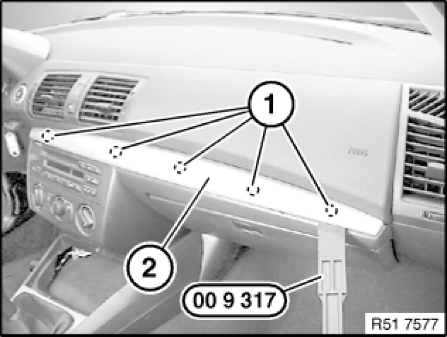
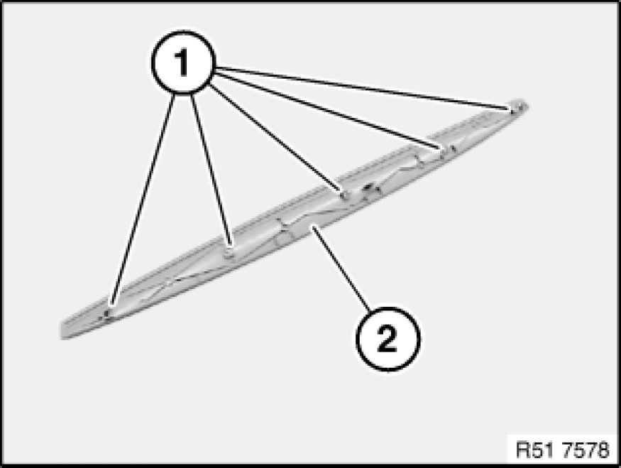

51 16 221 Replacing A Clip-Mounted Trim (Decorative Strip on Instrument Panel Trim)
51 16 221 - Replacing a clip-mounted trim (decorative strip on instrument panel trim)

Special tools required:

Warning!
Version with side and passenger airbags:
Follow safety instructions 51 00 ... Safety Instructions For Working on Cars With Airbag Systems for working on vehicles with airbag systems.
Warning!
An incorrect combination of pin and clip may cause the decorative strip to come off when the passenger airbag is deployed (risk of injury).
Only an original pin and clip combination may be used.

Important!
Risk of damage!
When working on trim panel components, make sure that the sensitive surfaces are not scratched or damaged.

Unclip pins (1) on trim (2) in upwards direction with special tool 00 9 317.

Installation Note:
Pins (1) on trim (2) must not be missing or damaged.